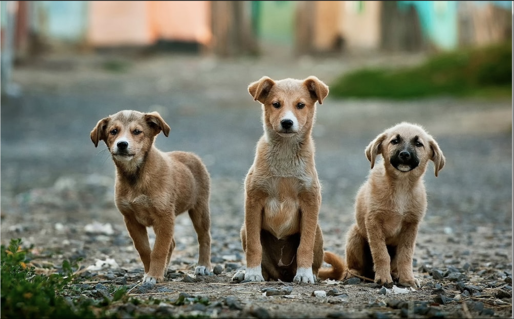

Adopt A Dog,
Change A Life
Why Support Animal Welfare?
Animal welfare and rights continues to be a relevant social issue as millions of dogs and cats are left free-roaming the streets with insufficient access to water, food, and protection from disease. And for the animals that do get picked up by shelters, up to 4 million are euthanized due to infirmity, age, and rambunctious behavior (1).

With this prevalent issue of animal welfare it can be broken into the “codified Five Freedoms” (2) which are:
Freedom from Hunger and Thirst: by ready access to fresh water and a diet to maintain full health and vigor.
Freedom from Discomfort: by providing an appropriate environment including shelter and a comfortable resting area.
Freedom from Pain, Injury or Disease: by prevention or rapid diagnosis and treatment
Freedom to Express Normal Behavior: by providing sufficient space, proper facilities and company of the animal’s own kind.
Freedom from Fear and Distress: by ensuring conditions and treatment which avoid mental suffering.
With an enumerated number of strays more animals are deprived of their fundamental freedoms, facing predation, famine, illness, and numerous other undesired circumstances lowering general animal quality of life.
The Five Freedoms
In addition to overpopulation, a prominent issue in shelters is lack of expertise for specific dog breeds and how to properly take care of them medically (1). So, for our shelter volunteer and staff partners, use our AI dog identifier to help better identify strays taken in and how to most effectively tend to their needs!
Our goal here is to not just find your most compatible dog, but help support these shelters in limiting overcrowding in 2023. To help advance our goal, adopt a dog with our recommendation system found to the left!
Why Support Animal Welfare?
However, local shelters are able to increase living conditions for lost animals by giving access to “affordable veterinary care” and limiting overall euthanasia for perfectly adoptable pets (3). They work in the ‘rescue and care’ for animals to eliminate widespread cruelty and neglect, along with eliminating ‘puppy mills’, an inhumane method of entrapping mother and father dogs to relentlessly breed with no medical care and killing them when they become infertile.
There are a variety of ways to support these shelters in their animal welfare efforts through donations and volunteerism, but one critical method to assist shelters is to adopt a dog! With many issues shelters are facing such as lack of funding and lack of trained medical officials, one recently relevant issue is overcrowding. This only further magnifies insufficient care time as outlined below:
“The rule of thumb for staffing projections for municipally run animal shelters or pounds is to allot an average of 15 minutes per animal per day — 6 minutes for feeding and 9 minutes for cleaning. While this may be the minimum required for basic maintenance of healthy animals, this does not take into account time required for medical treatments or therapy, provision of enrichment and animal socialization, temperament evaluation, or provision of exercise outside the cage or kennel. These are all factors that may be very important in the success of rehoming a stray animal and enhancing that animal’s quality of life.”
The Criticality of Animal Shelters
With overcrowded shelters more dogs are unable to receive proper medical attention and enrichment, yet again furthering the deprivation of the 5 freedoms. The root of this overpopulation has come massively from the pandemic which has played a massive role in crowding as many individuals have begun returning their “pandemic pets” (4). But as the economy returned to a status quo and many families found themselves unable to properly tend to their pet’s needs financially and behaviorally, donation became the optimal option (5). The graph depicted to the right shows well trusted Texas animal shelters and their current overrun holding capacities.
With these shockingly overpopulated shelters, every animal taken home means one less possibly being euthanized or deprived of their 5 freedoms. By adopting a dog, you are helping the shelter maximize effective care for all animals and prepare for the future acquisition of stray dogs through diminishing overcrowding.
The Problem of Overcrowding